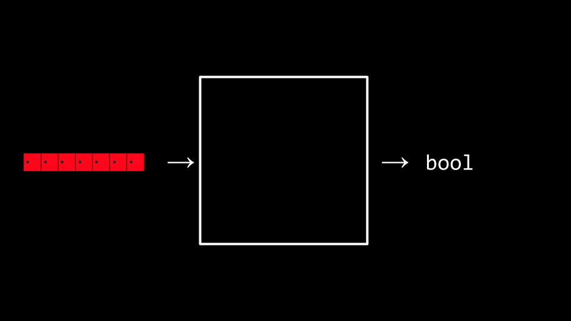

Week 3
Linear Search. Binary Search. Selection Sort. Bubble Sort. Merge Sort. Notação Assintótica. Recursão.
Notas
- Bem-vindo!
- Algoritmos
- Tempo de Execução
- Linear Search e Binary Search
- Estruturas de Dados
- Ordenação
- Recursão
- Merge Sort
- Conclusão
Bem-vindo!
- Na semana zero, introduzimos a ideia de um algoritmo.
- Nesta semana, vamos expandir nossa compreensão sobre algoritmos por meio de pseudocódigo e em direção ao próprio código.
- Além disso, vamos considerar a eficiência desses algoritmos. Na verdade, vamos aprimorar nossa compreensão sobre como usar alguns dos conceitos de baixo nível que discutimos na semana passada na construção de algoritmos.
Algoritmos
- Lembre-se de que na semana passada você foi apresentado à ideia de um array, que são blocos de memória lado a lado.
-
Você pode imaginar metaforicamente um array como uma série de sete armários vermelhos, como segue:

- Podemos imaginar que temos um problema essencial de querer saber se o número 50 está dentro de um array.
-
Potencialmente, podemos entregar nosso array para um algoritmo, onde o algoritmo procurará em nossos armários para ver se o número 50 está atrás de uma das portas: retornando o valor verdadeiro ou falso.

-
Podemos imaginar várias instruções que podemos fornecer ao nosso algoritmo para realizar essa tarefa da seguinte maneira:
For each door from left to right If 50 is behind door Return true Return falseObserve que as instruções acima são chamadas de pseudocódigo: uma versão legível para humanos das instruções que poderíamos fornecer ao computador.
-
Um cientista da computação poderia traduzir esse pseudocódigo da seguinte forma:
For i from 0 to n-1 If 50 is behind doors[i] Return true Return falseObserve que o acima ainda não é código, mas é uma aproximação bastante próxima do que o código final poderia parecer.
- Busca binária é um algoritmo de busca que poderia ser utilizado em nossa tarefa de encontrar o número 50.
-
Supondo que os valores dentro dos armários tenham sido organizados do menor para o maior, o pseudocódigo para busca binária seria o seguinte:
If there are no doors Return false If 50 is behind middle door Return true Else if 50 < middle door Search left half Else if 50 > middle door Search right half -
Usando a nomenclatura de código, podemos modificar ainda mais nosso algoritmo da seguinte maneira:
If no doors Return false If 50 is behind doors[middle] Return true Else if 50 < doors[middle] Search doors[0] through doors[middle-1] Else if 50 > doors[middle] Search doors[middle+1] through doors[n-1]Observe que, ao olhar para esta aproximação de código, você pode imaginar quase como isso poderia parecer em um código real.
Tempo de Execução
-
Tempo de execução envolve uma análise usando a notação big O. Dê uma olhada no gráfico a seguir:
- No gráfico acima, o primeiro algoritmo está em O(n). O segundo também está em O(n). O terceiro está em O(log n).
-
É a forma da curva que mostra a eficiência de um algoritmo. Alguns tempos de execução comuns que podemos ver são:
- O(n^2)
- O(n log n)
- O(n)
- O(log n)
- O(1)
- Entre os tempos de execução acima, O(n^2) é considerado o pior tempo de execução e O(1) é o mais rápido.
- A busca linear tem ordem O(n) porque pode levar n passos no pior caso para ser executada.
- A busca binária tem ordem O(log n) porque leva cada vez menos passos para ser executada, mesmo no pior caso.
- Os programadores estão interessados tanto no pior caso, ou limite superior, quanto no melhor caso, ou limite inferior.
- O símbolo Ω é usado para denotar o melhor caso de um algoritmo, como Ω(log n).
- O símbolo Θ é usado para denotar onde o limite superior e o limite inferior são iguais, onde os tempos de execução do melhor caso e do pior caso são os mesmos.
Linear Search e Binary Search
-
Você pode implementar a busca linear escrevendo
code search.cno terminal do seu computador e escrevendo o código da seguinte forma:#include <cs50.h> #include <stdio.h> int main(void) { // An array of integers int numbers[] = {20, 500, 10, 5, 100, 1, 50}; // Search for number int n = get_int("Number: "); for (int i = 0; i < 7; i++) { if (numbers[i] == n) { printf("Found\n"); return 0; } } printf("Not found\n"); return 1; }Observe que a linha que começa com
int numbers[]nos permite definir os valores de cada elemento do array à medida que o criamos. Em seguida, no loopfor, temos uma implementação da busca linear. - Agora implementamos a busca linear em C por nós mesmos!
-
E se quiséssemos procurar uma string dentro de um array? Modifique o código da seguinte maneira:
#include <cs50.h> #include <stdio.h> #include <string.h> int main(void) { // An array of strings string strings[] = {"battleship", "boot", "cannon", "iron", "thimble", "top hat"}; // Search for string string s = get_string("String: "); for (int i = 0; i < 6; i++) { if (strcmp(strings[i], s) == 0) { printf("Found\n"); return 0; } } printf("Not found\n"); return 1; }Observe que não podemos utilizar o operador
==como em nossa iteração anterior neste programa. Em vez disso, temos que usarstrcmp, que vem da bibliotecastring.h. -
De fato, executar este código nos permite iterar sobre esse array de strings para ver se uma determinada string está dentro dele. No entanto, se você receber um segmentation fault, onde uma parte da memória foi acessada pelo seu programa que não deveria ser acessada, certifique-se de ter
i < 6observado acima em vez dei < 7. -
Podemos combinar essas ideias de números e strings em um único programa. Digite
code phonebook.cem sua janela do terminal e escreva o código da seguinte maneira:#include <cs50.h> #include <stdio.h> #include <string.h> int main(void) { // Arrays of strings string names[] = {"John", "Aldo"}; string numbers[] = {"+55(82)99417-9669", "+55(82)99635-6612"}; // Search for name string name = get_string("Name: "); for (int i = 0; i < 2; i++) { if (strcmp(names[i], name) == 0) { printf("Found %s\n", numbers[i]); return 0; } } printf("Not found\n"); return 1; }Observe que o número de John começa com
99417e o número de telefone de Aldo começa com '99635'. Portanto,names[0]é John enumbers[0]é o número de John. - Embora esse código funcione, há diversas ineficiências. De fato, há uma chance de que os nomes e números das pessoas possam não corresponder. Não seria bom se pudéssemos criar nosso próprio tipo de dados onde pudéssemos associar uma pessoa com o número de telefone?
Estruturas de Dados
-
Acontece que C permite que criemos nossos próprios tipos de dados por meio de uma
struct. Modifique seu código da seguinte forma:#include <cs50.h> #include <stdio.h> #include <string.h> typedef struct { string name; string number; } person; int main(void) { person people[2]; people[0].name = "John"; people[0].number = "+55(82)99417-9669"; people[1].name = "Aldo"; people[1].number = "+55(82)99635-6612"; // Search for name string name = get_string("Name: "); for (int i = 0; i < 2; i++) { if (strcmp(people[i].name, name) == 0) { printf("Found %s\n", people[i].number); return 0; } } printf("Not found\n"); return 1; }Observe que o código começa com
typedef struct, onde um novo tipo de dados chamadopersoné definido. Dentro de umaperson, há uma string chamadanamee uma string chamadanumber. Na funçãomain, comece criando um array chamadopeopleque é do tipopersone tem tamanho 2. Em seguida, atualize os nomes e números de telefone das duas pessoas em nosso arraypeople. Mais importante ainda, observe como a notação de ponto, comopeople[0].name, permite-nos acessar apersonna posição 0 e atribuir a essa pessoa um nome.
Ordenação
- Ordenação é o ato de pegar uma lista não ordenada de valores e transformá-la em uma lista ordenada.
- Quando uma lista é ordenada, a busca nessa lista é muito menos exigente para o computador. Lembre-se de que podemos usar a busca binária em uma lista ordenada, mas não em uma lista não ordenada.
- Existem muitos tipos diferentes de algoritmos de ordenação.
- Selection sort é um desses algoritmos de busca.
-
O algoritmo de selection sort em pseudocódigo é:
For i from 0 to n–1 Find smallest number between numbers[i] and numbers[n-1] Swap smallest number with numbers[i] -
Considere a lista não ordenada da seguinte forma:
5 2 7 4 1 6 3 0 ^ -
O selection sort começará procurando o menor número na lista e trocará esse número com nossa posição atual na lista. Neste caso, o zero é localizado e movido para nossa posição atual.
-
Agora, nosso problema ficou menor, pois sabemos que pelo menos o início de nossa lista está ordenado. Então, podemos repetir o que fizemos, começando a partir do segundo número na lista:
-
1 é o menor número agora, então vamos trocá-lo com o segundo número. Vamos repetir isso novamente...
0 1 | 7 4 2 6 3 5 ^ -
... e novamente...
0 1 2 | 4 7 6 3 5 ^ -
... e novamente...
0 1 2 3 | 7 6 4 5 ^ -
... e novamente...
0 1 2 3 4 | 6 7 5 ^ - e assim por diante.
- Bubble sort é outro algoritmo de ordenação que funciona trocando repetidamente elementos para "borbulhar" os elementos maiores para o final.
-
O pseudocódigo para o bubble sort é:
Repeat n-1 times For i from 0 to n–2 If numbers[i] and numbers[i+1] out of order Swap them -
Começaremos com nossa lista não ordenada, mas desta vez vamos olhar para pares de números e trocá-los se estiverem fora de ordem:
-
Agora, o número mais alto está todo o caminho à direita, então melhoramos nosso problema. Vamos repetir isso novamente:
-
Agora os dois maiores valores estão à direita. Vamos repetir novamente:
2 4 1 5 3 0 | 6 7 ^ ^ 2 4 1 5 3 0 | 6 7 ^ ^ 2 1 4 5 3 0 | 6 7 ^ ^ 2 1 4 5 3 0 | 6 7 ^ ^ 2 1 4 3 5 0 | 6 7 ^ ^ 2 1 4 3 0 5 | 6 7 -
... e novamente...
2 1 4 3 0 | 5 6 7 ^ ^ 1 2 4 3 0 | 5 6 7 ^ ^ 1 2 3 4 0 | 5 6 7 ^ ^ 1 2 3 4 0 | 5 6 7 ^ ^ 1 2 3 0 4 | 5 6 7 -
... e novamente...
1 2 3 0 | 4 5 6 7 ^ ^ 1 2 3 0 | 4 5 6 7 ^ ^ 1 2 3 0 | 4 5 6 7 ^ ^ 1 2 0 3 | 4 5 6 7 -
... e novamente...
1 2 0 | 3 4 5 6 7 ^ ^ 1 2 0 | 3 4 5 6 7 ^ ^ 1 0 2 | 3 4 5 6 7 -
... e finalmente...
1 0 | 2 3 4 5 6 7 ^ ^ 0 1 | 2 3 4 5 6 7 - Observe que, à medida que percorremos nossa lista, cada vez mais dela se torna ordenada, então só precisamos olhar para os pares de números que ainda não foram ordenados.
-
Ao analisar o selection sort, fizemos apenas sete comparações. Representando isso matematicamente, onde n representa o número de casos, poderia ser dito que o selection sort pode ser analisado como:
(n-1)+(n-2)+(n-3)+ ... + 1ou, de forma mais simples n^2/2 - n/2.
- Considerando que a análise matemática, n2 é realmente o fator mais influente na determinação da eficiência deste algoritmo. Portanto, o selection sort é considerado da ordem de O(n^2) no pior caso em que todos os valores estão desordenados. Mesmo quando todos os valores estão ordenados, levará o mesmo número de passos. Portanto, o melhor caso pode ser observado como Ω(n^2). Como os casos de limite superior e limite inferior são os mesmos, a eficiência deste algoritmo como um todo pode ser considerada como Θ(n^2).
- Ao analisar o bubble sort, o pior caso é O(n^2). O melhor caso é Ω(n).
- Você pode visualizar uma comparação desses algoritmos.
0 | 2 7 4 1 6 3 5
0 | 2 7 4 1 6 3 5
^
5 2 7 4 1 6 3 0
^ ^
2 5 7 4 1 6 3 0
^ ^
2 5 7 4 1 6 3 0
^ ^
2 5 4 7 1 6 3 0
^ ^
2 5 4 1 7 6 3 0
^ ^
2 5 4 1 6 7 3 0
^ ^
2 5 4 1 6 3 7 0
^ ^
2 5 4 1 6 3 0 7
2 5 4 1 6 3 0 | 7
^ ^
2 5 4 1 6 3 0 | 7
^ ^
2 4 5 1 6 3 0 | 7
^ ^
2 4 1 5 6 3 0 | 7
^ ^
2 4 1 5 6 3 0 | 7
^ ^
2 4 1 5 3 6 0 | 7
^ ^
2 4 1 5 3 0 6 | 7
Recursão
- Como poderíamos melhorar nossa eficiência em nossa classificação?
-
A recursão é um conceito dentro da programação em que uma função chama a si mesma. Vimos isso anteriormente quando vimos...
If no doors Return false If number behind middle door Return true Else if number < middle door Search left half Else if number > middle door Search right halfObserve que estamos chamando
searchem iterações cada vez menores deste problema. -
Da mesma forma, em nosso pseudocódigo para a Semana 0, você pode ver onde a recursão foi implementada:
1 Pick up phone book 2 Open to middle of phone book 3 Look at page 4 If person is on page 5 Call person 6 Else if person is earlier in book 7 Open to middle of left half of book 8 Go back to line 3 9 Else if person is later in book 10 Open to middle of right half of book 11 Go back to line 3 12 Else 13 Quit -
Considere como na Semana 1 nós queríamos criar uma estrutura em forma de pirâmide da seguinte forma:
# ## ### #### -
Para implementar isso usando recursão, digite
recursão de código.cem sua janela de terminal e escreva o código da seguinte forma:#include <cs50.h> #include <stdio.h> void draw(int n); int main(void) { draw(1); } void draw(int n) { for (int i = 0; i < n; i++) { printf("#"); } printf("\n"); draw(n + 1); }Observe que a função draw chama a si mesma. Além disso, note que seu código pode ficar preso em um loop infinito. Para sair desse loop, se você ficar preso, pressione
ctrl-cno seu teclado. A razão pela qual isso cria um loop infinito é que não há nada dizendo ao programa para encerrar. Não há um caso em que o programa esteja concluído. -
Podemos corrigir nosso código da seguinte maneira:
#include <cs50.h> #include <stdio.h> void draw(int n); int main(void) { // Get height of pyramid int height = get_int("Height: "); // Draw pyramid draw(height); } void draw(int n) { // If nothing to draw if (n <= 0) { return; } // Draw pyramid of height n - 1 draw(n - 1); // Draw one more row of width n for (int i = 0; i < n; i++) { printf("#"); } printf("\n"); }Observe que o caso base garante que o código não será executado infinitamente. A linha
if (n <= 0)termina a recursão porque o problema foi resolvido. Sempre quedrawchama a si mesma, ela se chama comn-1. Em algum momento,n-1será igual a0, resultando na funçãodrawretornando e o programa terminando.
Merge Sort
- Agora podemos aproveitar a recursão em nossa busca por um algoritmo de ordenação mais eficiente e implementar o que é chamado de merge sort, um algoritmo de ordenação muito eficiente.
-
O pseudocódigo para o merge sort é bastante curto:
If only one number Quit Else Sort left half of number Sort right half of number Merge sorted halves -
Considere a seguinte lista de números:
7254 -
Primeiro, o merge sort pergunta: "este é apenas um número?" A resposta é "não", então o algoritmo continua.
7254 -
Em segundo lugar, o merge sort agora dividirá os números ao meio (ou o mais próximo possível) e ordenará a metade esquerda dos números.
72|54 -
Terceiro, o merge sort olharia para esses números à esquerda e perguntaria: "é apenas um número?" Como a resposta é não, então ele dividiria os números à esquerda ao meio.
7|2 -
Em quarto lugar, o merge sort irá novamente perguntar: "este é apenas um número?" A resposta é sim desta vez! Portanto, ele irá interromper esta tarefa e retornar à última tarefa que estava executando neste ponto:
72|54 -
Em quinto lugar, o merge sort ordenará os números à esquerda.
27|54 -
Agora, voltamos ao ponto em que paramos no pseudocódigo, agora que o lado esquerdo foi ordenado. Um processo semelhante de etapas 3-5 ocorrerá com os números do lado direito. Isso resultará em:
27|45 -
Ambas as metades estão agora ordenadas. Finalmente, o algoritmo irá mesclar ambos os lados. Ele irá olhar para o primeiro número à esquerda e o primeiro número à direita. Ele irá colocar o número menor primeiro, em seguida, o segundo menor. O algoritmo irá repetir isso para todos os números, resultando em:
2457 - O Merge sort está completo e o programa é finalizado.
- O Merge sort é um algoritmo de ordenação muito eficiente com o pior caso de O(n log n). O melhor caso ainda é Ω(n log n) porque o algoritmo ainda deve visitar cada elemento na lista. Portanto, o Merge sort também é Θ(n log n) já que o melhor caso e o pior caso são iguais.
- Uma visualização final foi compartilhada.
Resumindo
Nesta lição, você aprendeu sobre o pensamento algorítmico e a construção de seus próprios tipos de dados. Especificamente, você aprendeu sobre...
- Algoritmos.
- Notação Big O.
- Busca binária e busca linear.
- Vários algoritmos de ordenação, incluindo bubble sort, selection sort e merge sort.
- Recursão.
Até a próxima!